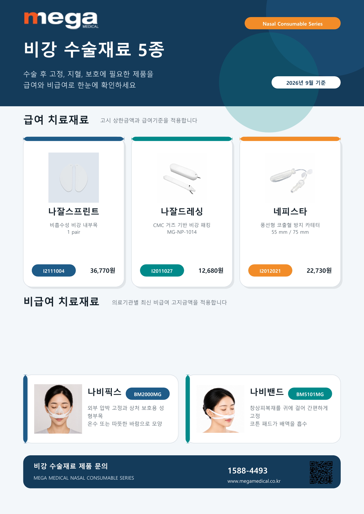
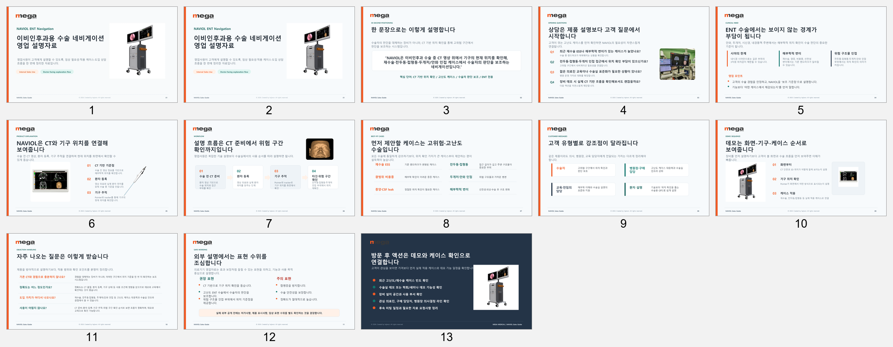
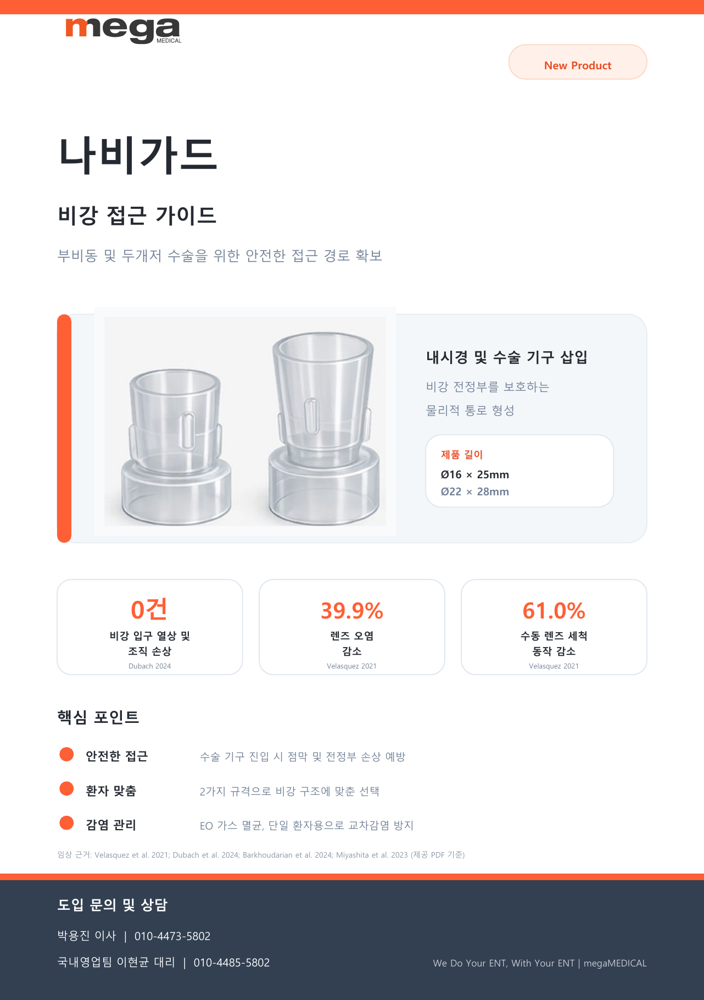
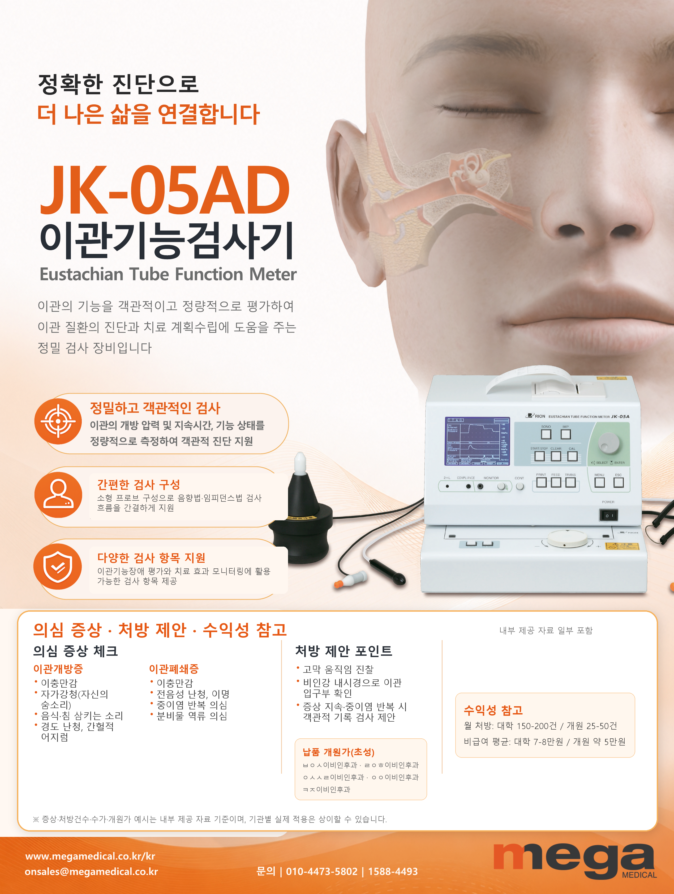
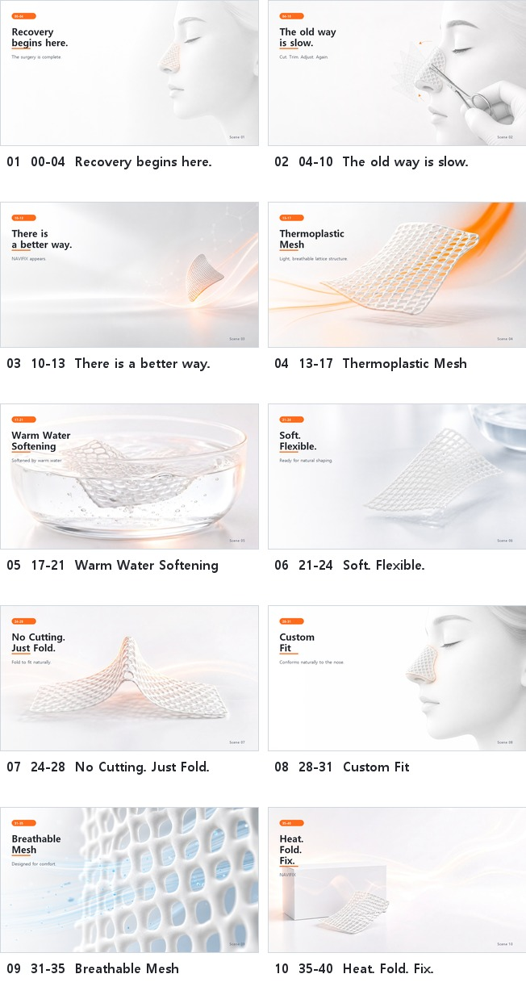
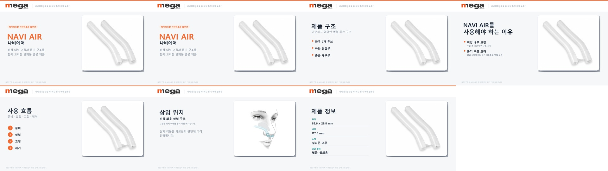

영업 운영 · ERP
간납사·대리점 발주, 수주, 출고, 매출, 수금, 월마감, 채권과 선납·수불 업무를 관리합니다.
Sales Operations · Marketing · DX
제조 현장에서 제품과 물류의 흐름을 익히고,
지금은 의료기기 산업에서 영업운영 · 데이터 분석 ·
콘텐츠 제작 · 업무 시스템 구축을 직접 수행합니다.
현장의 문제를 찾아 실제로 쓰이는 결과물로 바꾸는 사람입니다.
About Me
고등학교 졸업 후 조광정밀(포크레인 실린더 제조 공장)에서 산업기능요원으로 3년간 근무했습니다. 가공·물자관리·QC·유통까지 제품이 만들어지고 움직이는 전 과정을 손으로 직접 배웠습니다.
이후 건국대학교 실감미디어콘텐츠융합전공(GPA 3.86/4.5)에서 Unity, XR, 영상편집, 빅데이터 분석을 공부했고, 메타버스·XR콘텐츠·실감미디어 마이크로디그리 3종을 이수했습니다.
현재는 메가메디칼 영업기획팀에서 대학병원 계약·행정부터 학회 운영, 의료기기 영업자료, 웹 카탈로그와 ERP 통합 도구, 영상, 데이터 분석 보고서까지 업무 목적에 맞춰 직접 기획하고 실행하고 있습니다.
Career Story
현장에서 시작해 디지털로 확장하고, 지금은 영업과 마케팅의 경계를 넘나들며 일합니다. 세 개의 챕터로 이루어진 커리어입니다.
생산팀 사원 · 산업기능요원 (만기전역)
포크레인 실린더 전문 제조 공장에서 가공 · 물자관리 · QC · 품질관리 · 유통의 모든 공정을 3년간 직접 수행했습니다. 제품이 원자재에서 완제품이 되고 고객사로 출하되는 과정을 처음부터 끝까지 몸으로 배운 시간입니다.
실감미디어콘텐츠융합전공 · K뷰티산업융합전공 — GPA 3.86/4.5
현장 경험 위에 Unity, XR, 영상편집, 빅데이터, 디자인 역량을 더했습니다. 실감미디어 혁신융합대학사업단에서 마이크로디그리 3종을 이수하며 기술적 시야를 크게 넓혔습니다.
영업기획팀 사원
이비인후과 의료기기 전문 기업에서 영업운영 · 학회/전시 · 콘텐츠 · 업무 DX를 담당하고 있습니다. ERP와 Excel 기반 운영, 의료기기 영업자료, 웹 도구, 영상과 데이터 분석까지 업무의 목적과 사용자를 먼저 정의한 뒤 결과물로 구현합니다.
Performance
2025년 4월 입사 이후 직접 기획·운영·제작한 업무를 기준으로 정리했습니다.
Work Scope
운영만 하거나 제작만 하는 것이 아니라, 현황 파악부터 실행과 개선까지 한 흐름으로 연결합니다.
간납사·대리점 발주, 수주, 출고, 매출, 수금, 월마감, 채권과 선납·수불 업무를 관리합니다.
병원별 구매 규정과 입찰 절차를 파악하고 견적서, 규격서, 공문, 계약·납품 서류를 준비합니다.
판매·원가·청구 데이터를 정리해 병원별 추이, 수익성, 미정산 현황과 의사결정용 대시보드를 만듭니다.
제품 카탈로그, 학회 홍보물, 병원 설명자료, 임상 검토자료, 영상의 기획·편집·검수를 수행합니다.
부스 구성, 제작물, 물품, 현장 동선, 방문객 DB와 사후 대응까지 행사의 전체 실행을 지원합니다.
HTML/CSS/JS, NFC·QR, Excel 자동화와 데이터 변환 도구로 반복 업무를 표준화하고 접근성을 높입니다.
Skills
현장 경험에서 시작해 대학에서 디지털 기술을 쌓고, 지금은 실무에서 다양한 도구를 직접 활용하고 있습니다. 특히 HTML/CSS/JS로 사내 시스템을 직접 제작하고, 데이터 분석으로 경영진 보고서를 작성하는 등 기획·기술·실행을 하나로 연결하는 것을 강점으로 삼고 있습니다.
Projects
기획부터 실행까지 직접 담당한 프로젝트들입니다. 업무에 필요하다고 판단하면 배우고, 만들고, 현장 적용까지 이어갑니다.

Medical Document · 20265개 품목의 급여/비급여, 환자 부담, 적용 상황과 대표 병원 사례를 출처 기반으로 정리하고 A4 브로슈어·영업 보고서·Excel 분석표로 제작했습니다.

Medical Sales Content · 2026비과·이과 수술에서의 내비게이션 활용 범위를 검토하고, 의료진 논의자료와 영업 설명자료를 대상별로 분리해 구성했습니다.

Print Content · 2026NAVIGUARD·NAVI AIR 등 제품별 핵심 메시지를 정리하고 A5, A6, A4 다면 인쇄 규격에 맞춘 현장 배포물을 제작·검수했습니다.

Advertisement · 2026기존 광고의 하단 정보 구조와 가독성을 개선하고, 제품 메시지·문의 정보·표 영역을 인쇄 기준에 맞춰 정리했습니다.

Video Production · 2026제품 특성과 의료 환경을 반영해 콘셉트, 장면 구성, 생성형 영상 소스, 러프컷 검토 보드까지 일관된 제작 파이프라인을 구축했습니다.

Web · Video · 2026제품 정보를 모바일 웹으로 재구성하고, 화면 분할형 사용 가이드 영상과 PDF 홍보자료를 하나의 캠페인 자산으로 연결했습니다.
NAVI AIR, NAVIFIX, NAVIOL의 웹·영상·PPT 산출물과 진행 현황을 한곳에서 확인할 수 있도록 GitHub Pages 기반 허브를 설계했습니다.
납품·장비·매출 자료의 서로 다른 형식을 정규화하고, 품목·자산·거래 관계를 한 화면에서 조회할 수 있는 웹 도구와 업로드용 Excel 변환 흐름을 구축했습니다.
간납사별 발주–출고–매출–수금 흐름과 선납 제품 수불을 관리대장과 업무판으로 구조화해 누락 확인과 인수인계가 쉬운 체계로 정리했습니다.
영업사원 업무 효율화를 위해 HTML / CSS / JS로 메가메디칼 전 제품 카탈로그 웹페이지를 직접 설계·제작. 기존 PDF 방식 대비 실시간 업데이트, 링크 공유, 모바일 최적화를 실현하여 병원 영업 현장에서 활용 중.
병원 납품 현장에서 필요한 제품 정보·서류를 NFC 태그 하나로 즉시 접근할 수 있도록 웹 기반 시스템 설계. 현장 업무 효율을 높이고 고객 신뢰도를 동시에 향상시킨 사례.
대표이사·해외영업팀용 디지털 명함을 HTML/CSS로 직접 제작. QR코드 연동·모바일 반응형 적용. 언택트 비즈니스 환경에 맞는 네트워킹 도구를 사내에 내재화.
나빌룬 연간 비교 분석, 비강소모품 수익성 분석, ETD 데이터 분석, IQ200 고객 DB 구축 등 사내 판매 데이터를 집계·시각화하여 경영진 보고용 HTML 대시보드 및 수치 보고서 작성.
NET-1100, NET-1500D, 마이크로스코프, 네비게이션 홍보영상, 회사 4K 루프영상, 학회 홍보영상 등 제품 소개·서비스 영상 시리즈를 직접 기획·촬영·편집하여 유튜브 배포.
국내 최대 의료기기 전시회 KIMES 2026에 참가. 부스 구역별 설치 가이드 기획, 현장 운영, 방문객 데이터 수집 및 고객 DB 구축까지 전시 전반을 기획하고 실행.
2024 고흥군 미디어아트 작품 공모전에서 실감상 — 잠수, 혁신상 — AI의 꿈 2관왕 수상. AI와 미디어아트를 융합한 실험적 작품으로 독창성과 기술 활용을 동시에 인정받음.
2024 MAD-STARS 부산국제마케팅광고제에서 CREATIVITY상 수상. 광고·마케팅 크리에이티비티 역량을 국제 무대에서 공식 인정받음.
건국대 실감미디어 마이크로디그리 과정에서 Unity C# 기반 AR/VR/메타버스 콘텐츠를 기획·개발. XR 개발 전체 파이프라인 경험 (기획 → 3D 연출 → 빌드 → 배포).
Education & Awards
Contact